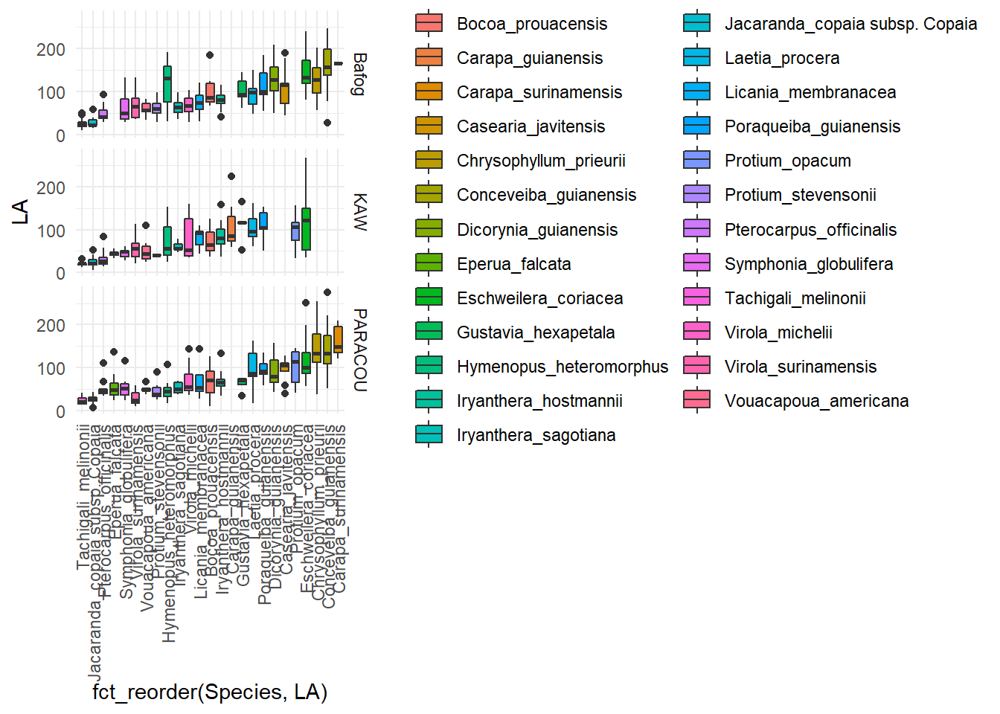
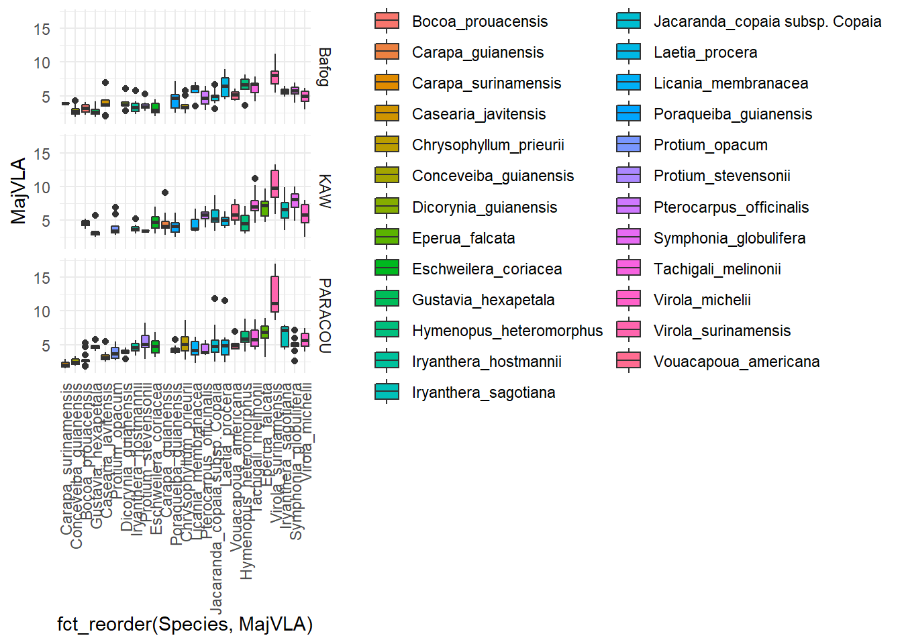
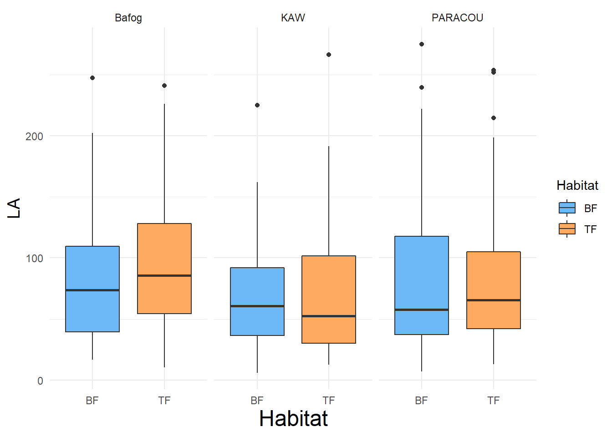
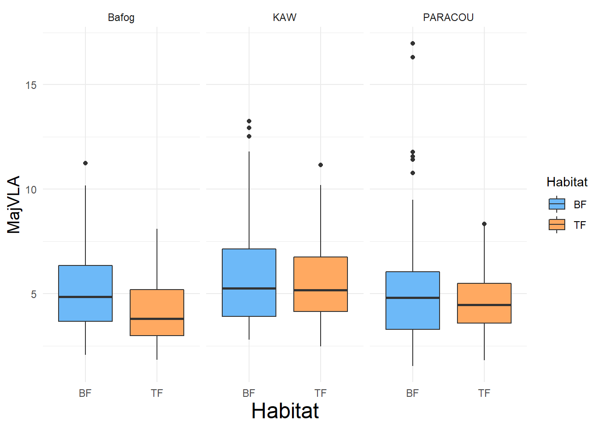
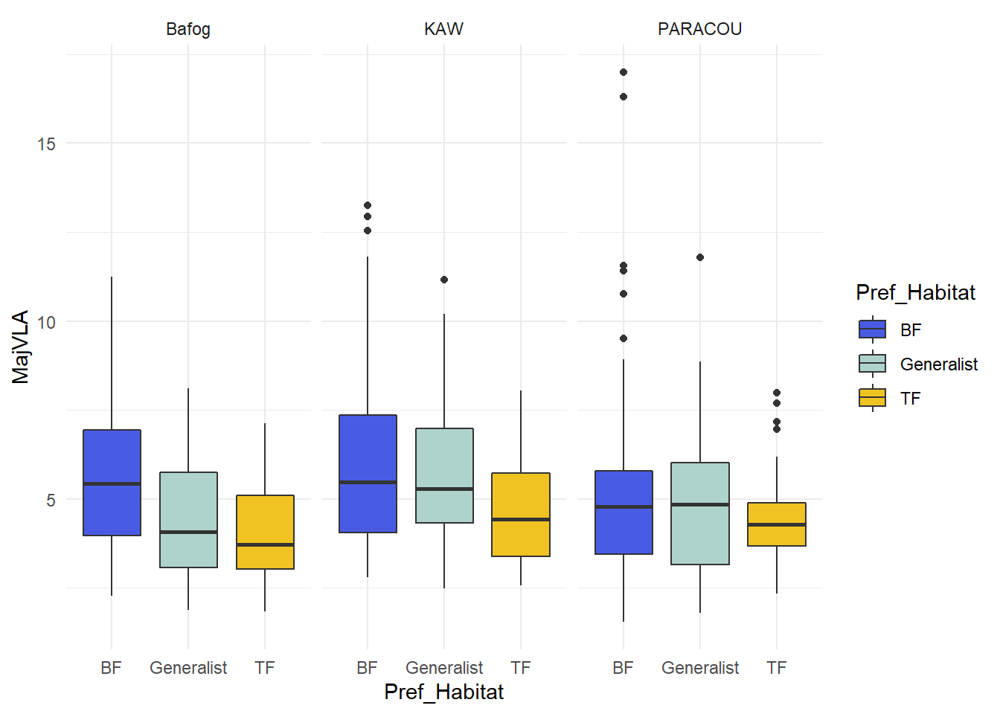
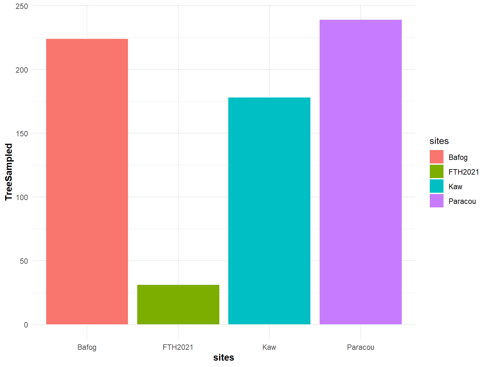
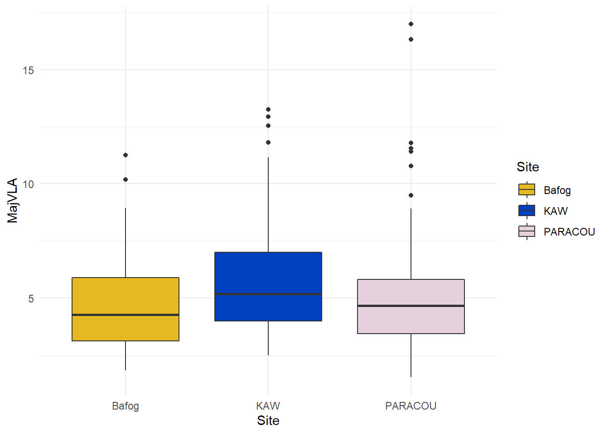

Chapter 9 Results
9.1 Across species from all habitats

## Warning: Removed 6 rows containing non-finite values (stat_boxplot).
9.2 SFF vs TF habitats

## Warning: Removed 6 rows containing non-finite values (stat_boxplot).
9.3 Specialists SFF vs Specialists TF vs Generalists

## Warning: Removed 6 rows containing non-finite values (stat_boxplot).
9.4 Bafog vs Kaw

## Warning: Removed 6 rows containing non-finite values (stat_boxplot).